Kredit foto
Foto di website ini berasal dari dua sumber: arsip berlisensi terbuka (Wikimedia Commons) dan dokumentasi SKALA sendiri. Foto berlisensi CC diubah ukurannya, dipotong sesuai tata letak, dan dikonversi ke format WebP. Versi yang diubah dibagikan dengan lisensi yang sama (CC BY-SA) atau dengan atribusi (CC BY). Foto arsip program bantuan Australia dan USAID tidak menunjukkan kegiatan SKALA.
Sumber berlisensi terbuka
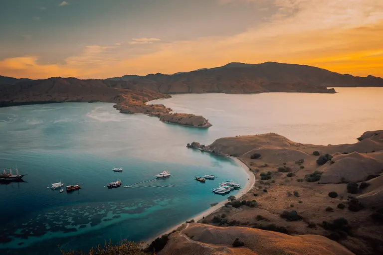
Gili Lawa, Taman Nasional Komodo, Nusa Tenggara Timur
Dipakai di: Hero (slide 1)
Foto: Andhika bayu nugraha · CC BY-SA 4.0 (membuka tab baru) · Sumber (membuka tab baru)
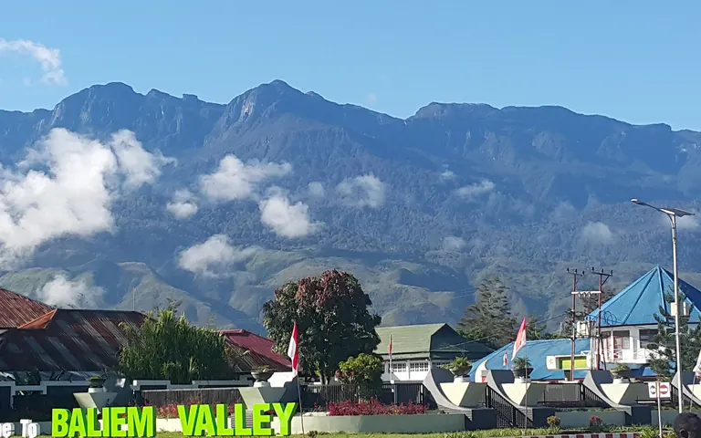
Bandara Wamena dan Lembah Baliem pada pagi hari, Papua Pegunungan
Dipakai di: Hero (slide 2)
Foto: Aleda Mawene · CC BY-SA 4.0 (membuka tab baru) · Sumber (membuka tab baru)
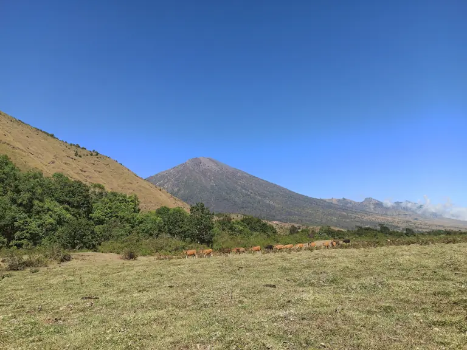
Bukit savana di Pulau Lombok, Nusa Tenggara Barat
Dipakai di: Hero (slide 3)
Foto: Penyunting1998 · CC BY-SA 4.0 (membuka tab baru) · Sumber (membuka tab baru)
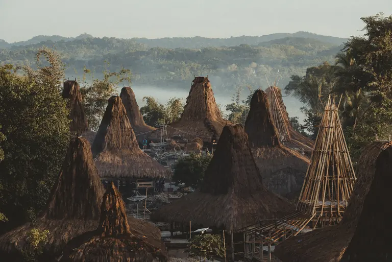
Pagi di Kampung Praijing, Sumba, Nusa Tenggara Timur
Dipakai di: Hero (slide 4)
Foto: Fakhri Anindita · CC BY-SA 4.0 (membuka tab baru) · Sumber (membuka tab baru)
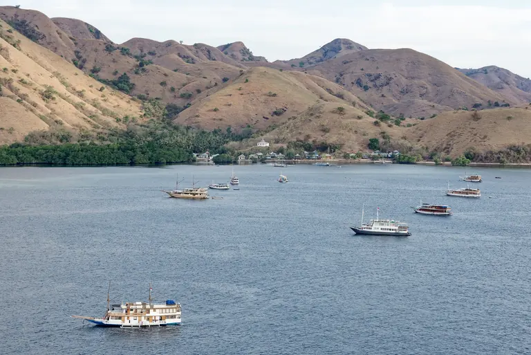
Pemandangan dari Pulau Kelor, Taman Nasional Komodo, Nusa Tenggara Timur
Dipakai di: Hero (slide 5)
Foto: Jakub Hałun · CC BY 4.0 (membuka tab baru) · Sumber (membuka tab baru)
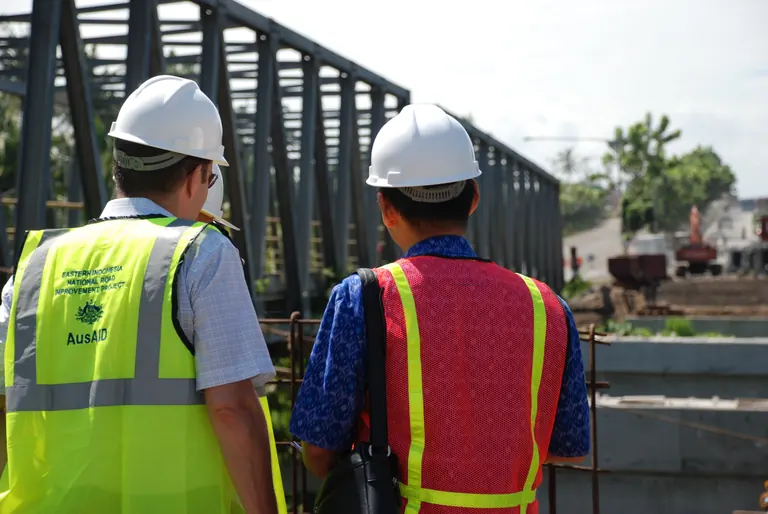
Dua teknisi pada program peningkatan jalan nasional di Indonesia timur (arsip program bantuan Australia; bukan kegiatan SKALA)
Dipakai di: Tentang Kami
Foto: Department of Foreign Affairs and Trade (DFAT) · CC BY 2.0 (membuka tab baru) · Sumber (membuka tab baru)
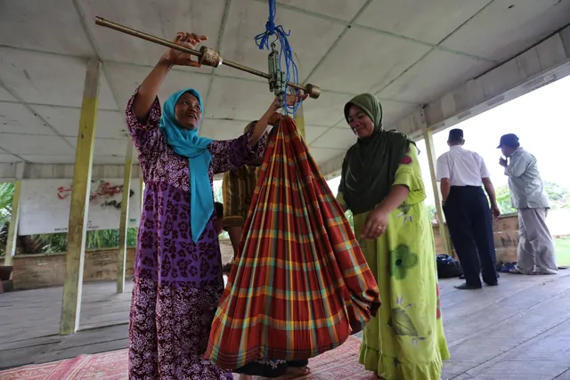
Penimbangan bayi pada layanan kesehatan ibu dan anak di Indonesia (USAID Indonesia)
Dipakai di: Tujuan (galeri 1)
Foto: USAID Indonesia · Public domain (membuka tab baru) · Sumber (membuka tab baru)

Pelatihan untuk perempuan di Indonesia (arsip program bantuan Australia; bukan kegiatan SKALA)
Dipakai di: Tujuan (galeri 3)
Foto: Department of Foreign Affairs and Trade (DFAT) · CC BY 2.0 (membuka tab baru) · Sumber (membuka tab baru)
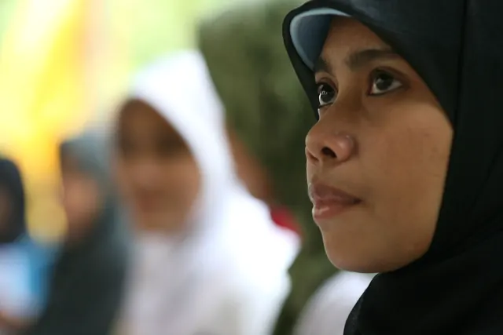
Pelatihan untuk perempuan di Indonesia (arsip program bantuan Australia; bukan kegiatan SKALA)
Dipakai di: Tujuan (akordeon 3)
Foto: Department of Foreign Affairs and Trade (DFAT) · CC BY 2.0 (membuka tab baru) · Sumber (membuka tab baru)
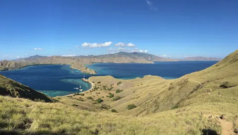
Teluk dan perbukitan savana di Gili Laba, Flores, Nusa Tenggara Timur
Dipakai di: Tujuan (akordeon 4), profil Nusa Tenggara Timur
Foto: Canisie · CC BY-SA 4.0 (membuka tab baru) · Sumber (membuka tab baru)
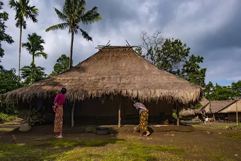
Rumah adat di Desa Senaru, Lombok, Nusa Tenggara Barat
Dipakai di: Kerangka hasil: Daerah
Foto: RaiyaniM · CC BY-SA 4.0 (membuka tab baru) · Sumber (membuka tab baru)
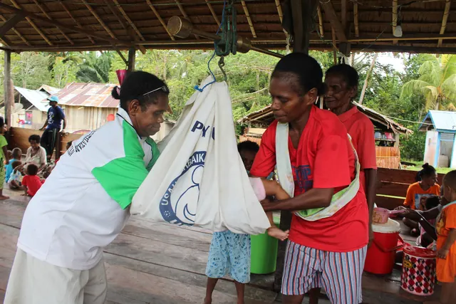
Kader posyandu menimbang balita bersama warga
Dipakai di: Kerangka hasil: Warga
Foto: Lefaan · CC BY-SA 4.0 (membuka tab baru) · Sumber (membuka tab baru)
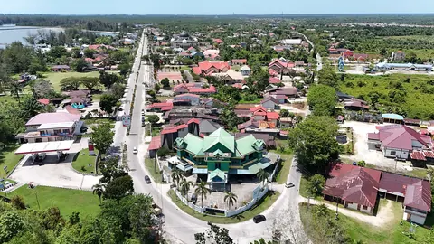
Pandangan udara Kota Singkil, Aceh Singkil, Aceh
Dipakai di: Profil Aceh
Foto: Suhardindjalal · CC BY 4.0 (membuka tab baru) · Sumber (membuka tab baru)
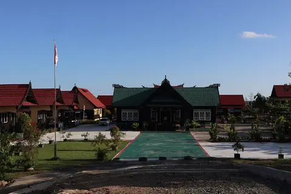
Rumah adat Baloy Mayo suku Tidung, Kalimantan Utara
Dipakai di: Profil Kalimantan Utara
Foto: Ezagren (bicara / talk) · CC BY-SA 4.0 (membuka tab baru) · Sumber (membuka tab baru)
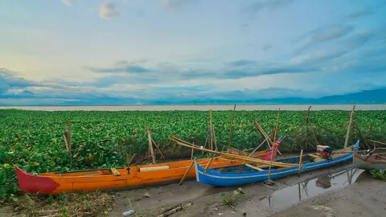
Perahu nelayan di Danau Limboto, Gorontalo
Dipakai di: Profil Gorontalo
Foto: Ling Ling Project · CC BY-SA 4.0 (membuka tab baru) · Sumber (membuka tab baru)
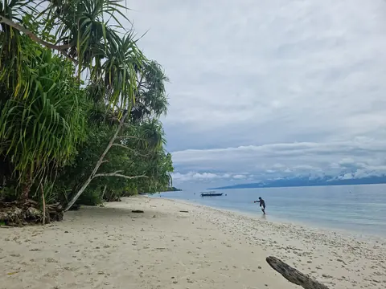
Pantai Syornabo, Pulau Mansinam, Manokwari, Papua Barat
Dipakai di: Profil Papua Barat
Foto: Firmansyah Dg Romo · CC BY-SA 4.0 (membuka tab baru) · Sumber (membuka tab baru)
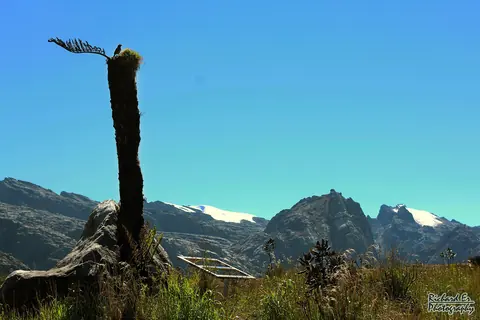
Puncak Cartenz di Pegunungan Tengah Papua
Dipakai di: Profil Papua Tengah
Foto: Richarderari · CC BY-SA 3.0 (membuka tab baru) · Sumber (membuka tab baru)
-
Jembatan Youtefa, Jayapura, Papua
Dipakai di: Profil Papua
Foto: Salananya · CC BY-SA 4.0 (membuka tab baru) · Sumber (membuka tab baru)
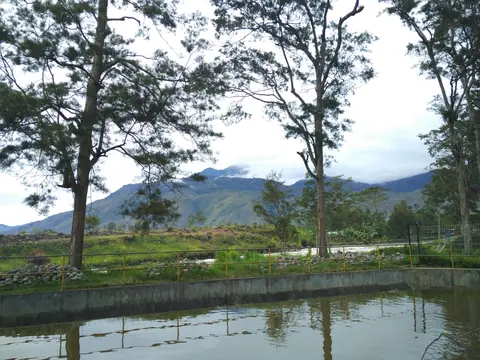
Tampungan air mikrohidro dan Sungai Uwe di sekitar Wamena, Papua Pegunungan
Dipakai di: Profil Papua Pegunungan
Foto: M.akbar.raf · CC BY-SA 4.0 (membuka tab baru) · Sumber (membuka tab baru)
Dokumentasi SKALA
Diambil dari skala.or.id. Hak penggunaan ada pada SKALA dan mitranya.
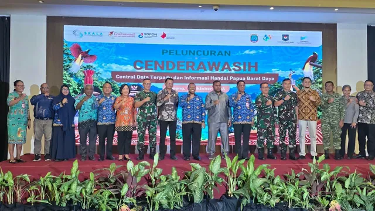
Peluncuran Portal Cenderawasih, Papua Barat Daya
Dipakai di: Informasi Kegiatan; profil Papua Barat Daya
Sumber: skala.or.id

Peluncuran dan pelatihan portal data daerah, Papua Selatan
Dipakai di: Informasi Kegiatan; Tujuan (galeri 2); profil Papua Selatan
Sumber: skala.or.id

Peluncuran Dashboard Eksekutif, Nusa Tenggara Barat
Dipakai di: Informasi Kegiatan; Tujuan (akordeon 2); profil Nusa Tenggara Barat
Sumber: skala.or.id
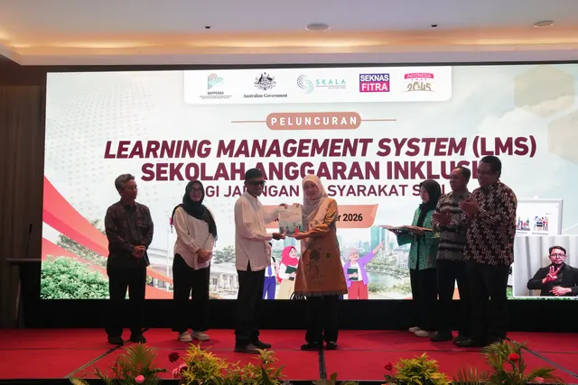
Peluncuran LMS Sekolah Anggaran Inklusif (SEKAR Inklusif)
Dipakai di: Informasi Kegiatan; Kerangka hasil: Pusat
Sumber: skala.or.id
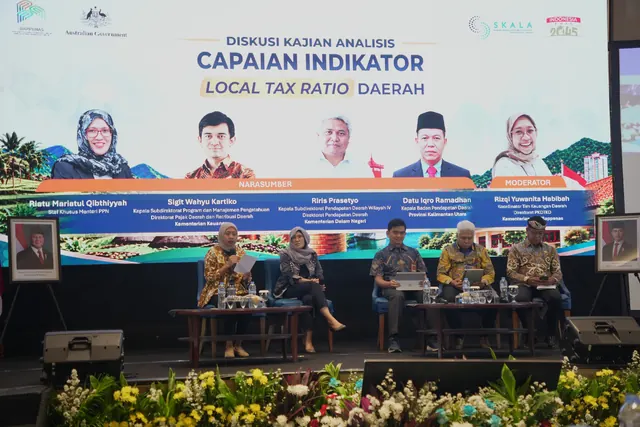
Diskusi kajian analisis capaian indikator Local Tax Ratio daerah
Dipakai di: Informasi Kegiatan; Tujuan (akordeon 1)
Sumber: skala.or.id

Sampul catatan panduan "Dari Pengetahuan ke Pembentukan Kebijakan" (Oktober 2026)
Dipakai di: Publikasi terbaru
Sumber: skala.or.id

Sampul buklet "Menembus Ombak, Menjangkau Masyarakat" (Oktober 2026)
Dipakai di: Publikasi terbaru; profil Maluku
Sumber: skala.or.id
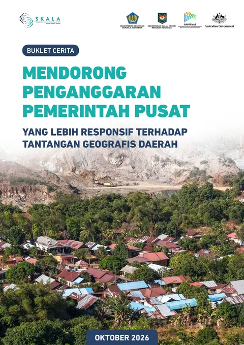
Sampul buklet cerita "Mendorong Penganggaran Pemerintah Pusat…" (Oktober 2026)
Dipakai di: Publikasi terbaru
Sumber: skala.or.id

Gambar sampul siniar "Isu Lanjut Usia Hantui Indonesia?"
Dipakai di: Siniar
Sumber: skala.or.id

Gambar sampul siniar "Menerobos Batas"
Dipakai di: Siniar
Sumber: skala.or.id

Gambar sampul siniar "Regsosek untuk Perencanaan Pembangunan Nasional yang Lebih Baik"
Dipakai di: Siniar
Sumber: skala.or.id

Sayid Azhary, Kepala UPTD Statistik Diskominfo dan Sandi Provinsi Aceh
Dipakai di: Suara mitra
Sumber: skala.or.id

Kosmas Damianus Lana, Sekretaris Daerah Provinsi NTT
Dipakai di: Suara mitra
Sumber: skala.or.id
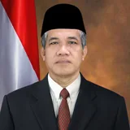
Bertius, S.Hut. T, Plt. Kepala Bappeda dan Litbang Provinsi Kalimantan Utara
Dipakai di: Suara mitra
Sumber: skala.or.id